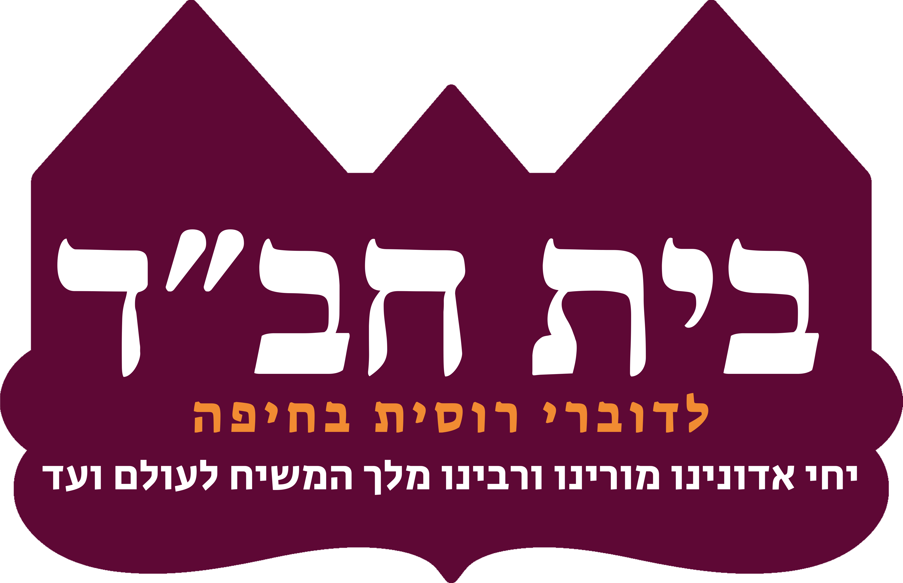
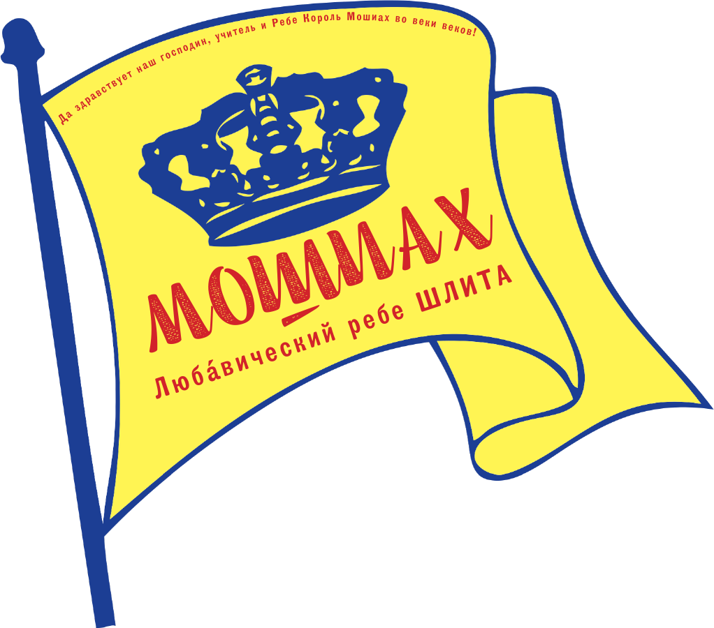
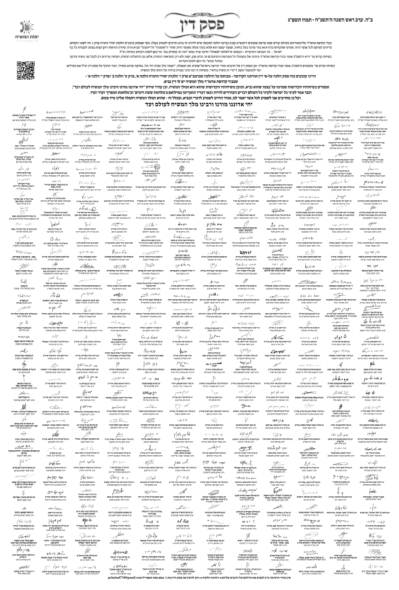

RU
עברית
EN


RAMBAM · HILCHOT MELACHIM 11:4
«ואם יעמוד מלך מבית דוד הוגה בתורה ועוסק במצוות כדוד אביו… ויכוף כל ישראל לילך בה ולחזק בדקה, וילחם מלחמות ה׳ — הרי זה בחזקת שהוא משיח…»
MOSHIACH VADAI · משיח ודאי
TALMUD · RAMBAN · MIDRASH · CHASSIDUT
ORIGINAL RABBINIC RULING

×